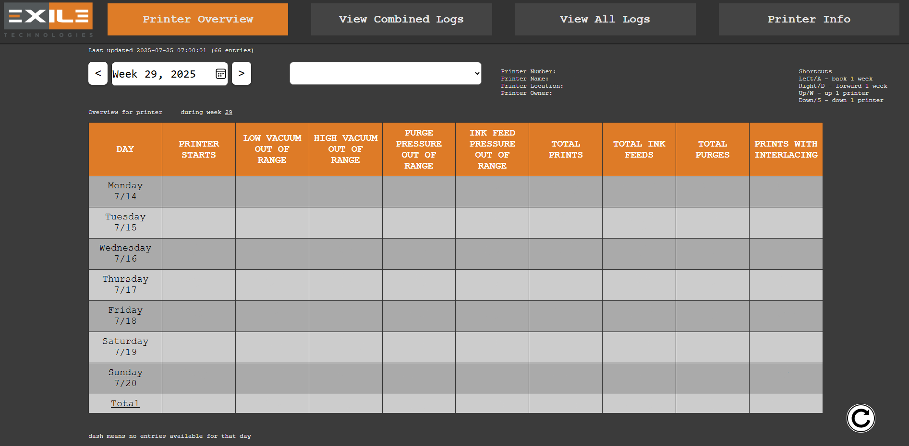
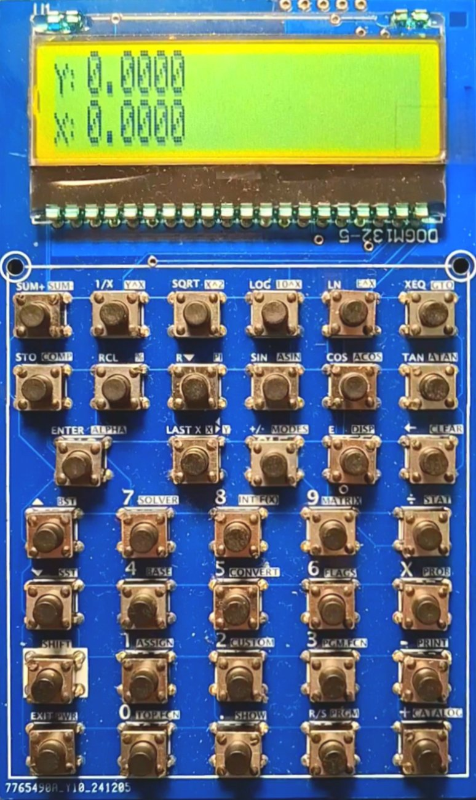
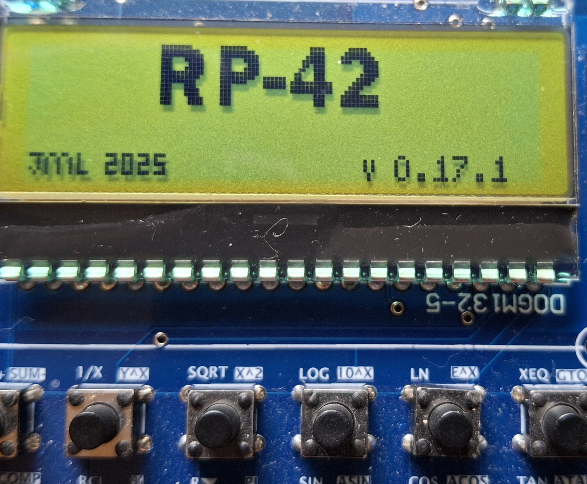
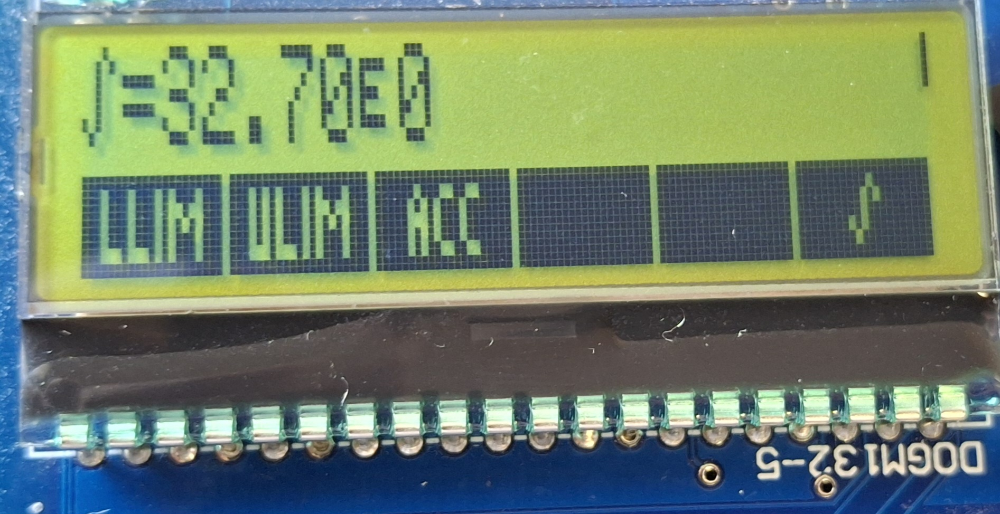
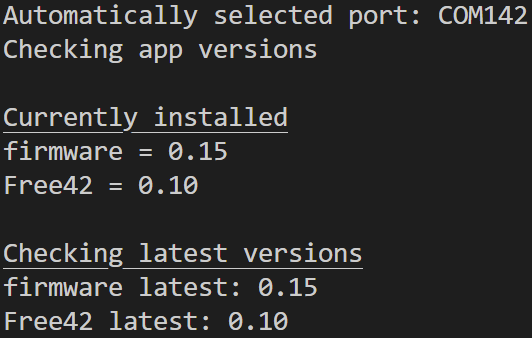
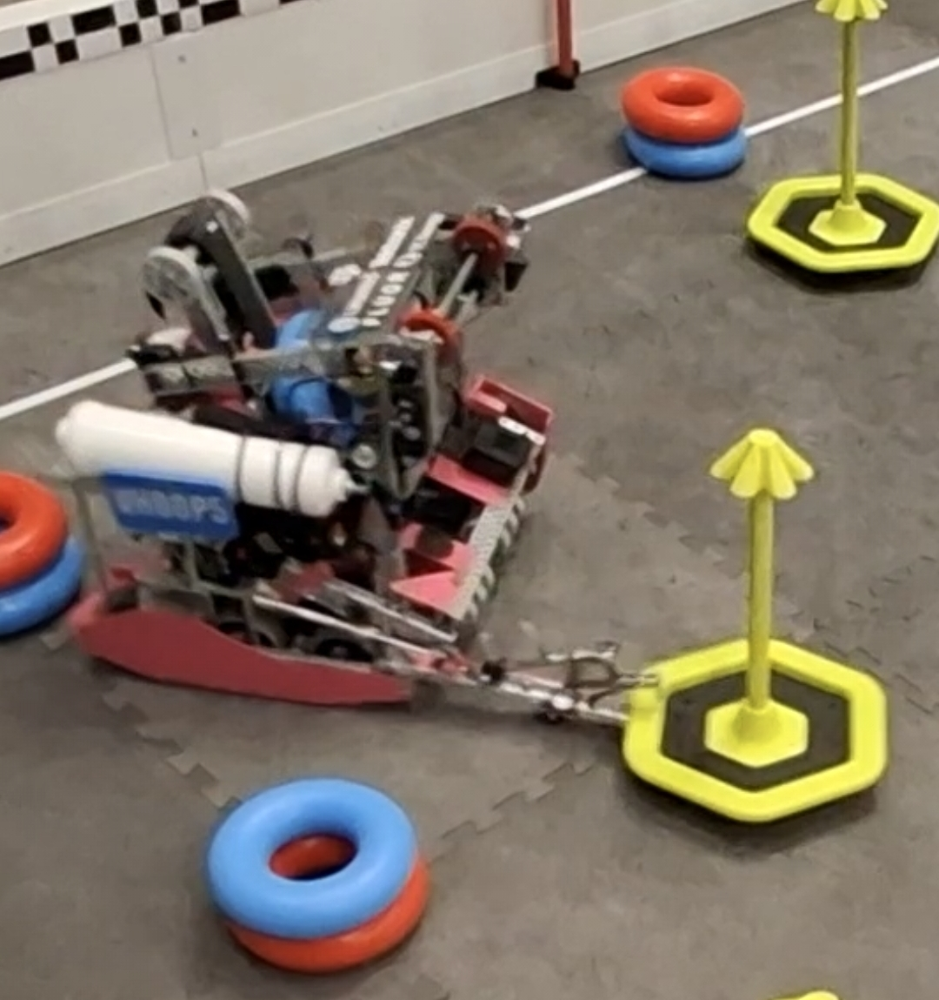

Houston, TX
Software Engineer
May 2024 - Present
Colalborated with a team of 9 engineers in R&D to develop software for the Spyder 2 and Spyder X printers, as well as internal tools for tech support.
Tasks:


https://github.com/Jeremy924/rp42-hardware
RP-42 is a scientific reverse polish notation calculator modeled after the HP42. RP-42 uses custom hardware with custom firmware to run an open source clone of the HP42, Free42. RP-42 uses a custom PCB featuring a STM32L475 microcontroller, 8MB flash storage, 132x32 low power LCD screen, and dual power (usb or battery).
Features
https://github.com/Jeremy924/rp42-firmware
The operating system for RP-42 is RP-OS, which is a custom operating system designed for the RP-42. It includes support for accessing the fat filesystem, drawing to the screen, reading from the keyboard, controlling timers, and a terminal interface over USB. The OS controls all IO components so that applications are hardware independent.
Features


The main application that RP-42 was designed to run is Free42, which is an open source clone of the HP42. Free42 for RP-42 supports saving and loading multiple states allowing the user to switch between multiple calculator states. Free42 for RP-42 saves states to the file system which can be accessed by connecting it to a computer over USB which allows users to upload states from their PC to the calculator.
Features
RP42CLI is a command line interface for configuring RP-42, installing apps, and upgrading the firmware.
Features


January 2024 - May 2025
Software Lead August 2024 - May 2025
Tasks
College Station, TX
GPA:
4.0
Major:
Computer Engineering
Class:
2027
CSCE 313
Introduction to Computer Systems
CSCE 331
Foundations of Software Engineering
ECEN 314
Signals and Systems
ECEN 325
Electronics
CSCE 221
Data structures and Algorithms
CSCE 222
Discrete Structures for Computing
ECEN 214
Electric Circuit Theory
ECEN 248
Intro to Digital Systems Design
ECEN 350
Computer Architecture and Design
MATH 308
Differiential Equations
MATH 311
Topics in Applied Mathematics 1
STAT 211
Principles of Statistics